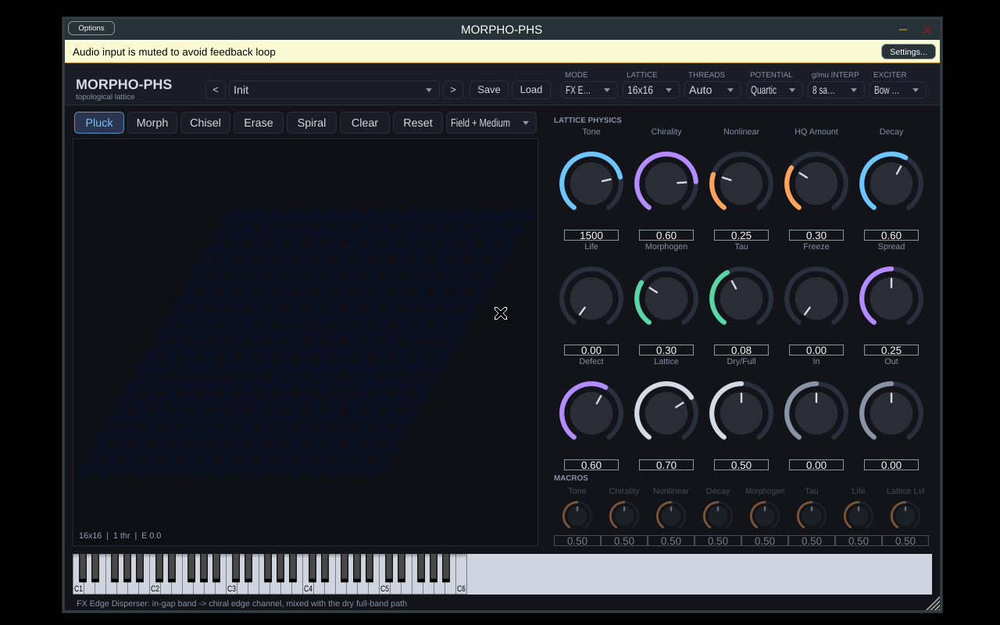

日期：2026-10-30（Asia/Shanghai）。全部工作都在 box 上完成，box 是 Linux 虚拟机，8 个逻辑核，处理器标识为 Intel Xeon。用户的 i9 PC 本阶段一直离线，所以 没有任何在 i9 上实测的数字；Windows 部分只提供脚本。
| 项目 | 结果 | 状态 |
|---|---|---|
| 插件构建 | JUCE 8.0.9 + CMake/Ninja + g++ 14：VST3、Standalone、CLAP 和 morpho_cli 都已构建（每个约 6 MB） | ✅ |
| pluginval（Linux，xvfb） | VST3 strictness 5：SUCCESS；strictness 10：SUCCESS（含 fuzz parameters、状态恢复、编辑器、总线布局） | ✅ |
| 引擎测试 P1–P7 | 全部通过：功率平衡相对误差 3.76e-15；无源性 0；1/2/3/4/6/8 线程逐位一致；processBlock 0 次堆分配 | ✅ |
| ENPU-C + 8 样本 g/μ 插值（默认） | 高频伪影：阶梯 +8.33 dB，8 样本插值 +2.42 dB，逐样本 0.00 dB（参考 = 逐样本线性插值） | ✅（见决策 D1） |
| 向量化 log-cosh 近似（HQ-fast） | K=3 sqrt 和式；|s|≤10 时 |U−logcosh|≤1.25e-3，|U′−tanh|≤1.23e-3；在网格上凸、非负；与精确 HQ 输出相差 −162 dB；能量证明照样成立（见 §3） | ✅ |
| 32×32 HQ 在 ≤8 线程内是否满足预算 | 插件引擎（f32，块 128）：HQ-fast 3 线程 11.2 µs/样本（预算 20.83），p99 为块预算的 0.68；4 线程 9.1 | ✅（box 实测） |
| 并联带隙拓扑通道 | 干声/全频路径 ∥ 3 段 Cheby-II 带隙滤波器组 → 边缘源端口；带边跟随 tone 和 HQ 的在位刚度 | ✅ |
| 预设系统 | .morpho JSON 规范、加载器（校验、按标签取值、越界值钳位）、27 个工厂预设（7 类）、8 个宏旋钮 |
✅ |
| 离线渲染 | 3 种模式 × 8 个任务 × L8/16/32，加 HQ-fast 和 27 个预设，共 63 个 WAV：全部有限，0 次 NaN 复位，0 个触发限幅器 | ✅ |
| CPU 基准 | 48 kHz，块 64/128/512 × L 8/16/32 × 线程 1/2/3/4/6/8，FX 四次势 / FX HQ-fast / 乐器 / HQ-exact，输出 JSON+TXT | ✅（box 实测） |
| Windows | scripts/windows/build_windows.ps1、bench_windows.ps1、README_WINDOWS.md |
⏳ 未在 Windows 上运行 |
| 1/f 说法 | 已删除，新文档统一写成“有界、持续的不规则性”（bounded sustained irregularity） | ✅ |
┌──────── 消息线程 ────────┐ ┌──────────── 音频线程 ─────────────┐
APVTS ──►│ 15 Hz 计时器： │ pending_（原子指针） │ processBlock：ScopedNoDenormals │
宏映射 ──►│ request_build(L, 线程) │ ──────────────────────► │ 20 ms 参数平滑（tone/tau 取对数） │
编辑器 ──►│ collect_garbage() │ 256 样本淡出/淡入切换 │ 每 64 样本一个控制 tick： │
画笔 ──►│ 切换后重新推送缺陷 │ │ ENPU-C + 核内 g/μ 8 样本插值 │
└─────────────────────────┘ SPSC 事件队列（256） │ Barkley 介质 + 形态发生耦合 │
LatticeView ◄── 三缓冲快照（约 60 Hz）◄──────────────────────── │ ESAV-LF 多线程内核（SpinBarrier） │
└───────────────────────────────────┘

截图中能看到一个已知小问题：顶部的六个下拉框较窄，选项名被截断（例如 “FX E…”），下拉后能看到全名。
近似式为 Û(s) = Σₖ wₖ s²/(√(cₖ²+s²)+cₖ)，取 K=3。约束为 Σw=1 和 Σw/c=1，因此小 s 时 Û ≈ s²/2，大 s 时 Û ≈ |s|。第三个约束 Σwc = ln2 在 w≥0 时与前两个不可兼容，已放弃，并在 logcosh_fit.json 里如实记录。
| f32 µs/样本 | 1T | 2T | 3T | 4T | 6T | 8T |
|---|---|---|---|---|---|---|
| 四次势 | 24.3 | 13.3 | 11.0 | 7.9 | 6.9 | 5.7 |
| HQ-fast | 28.7 | 21.4* | 11.3 | 9.4 | 7.5 | 7.0 |
| HQ exact（log/exp） | 66.6 | 40.0 | 27.1 | 19.3 | 15.2 | 13.6 |
*该点受 VM 噪声影响，前一次运行为 16.8。四次势和 HQ-exact 两行来自 bench_engine_L32.csv（首次完整运行），HQ-fast 来自 bench_engine_L32_hqfast_v2_quiet.txt。HQ-fast 只比四次势多约 3–23%，而精确 HQ 是四次势的约 2.7 倍。
测试条件：每个配置测 2 s 音频，另有 0.5 s 预热；计的是整个 EngineHost::process 的时间，包括带隙滤波器组、控制 tick、介质、MPE 和输出级。“负载”指块耗时中位数占块预算的比例，p99/预算 < 1 才算没有爆音风险。完整表格在 experiments/results/phase3/bench_cli_*.txt/json。
块 128，µs/样本中位数（括号内为 p99 块耗时 / 块预算）
| 配置 | 1T | 2T | 3T | 4T | 6T | 8T |
|---|---|---|---|---|---|---|
| FX 四次势 L8 | 1.53 | 1.42 | 1.65 | 1.53 | 1.50 | 1.50 |
| FX 四次势 L16 | 5.88 (0.46) | 3.76 | 3.17 | 2.57 (0.18) | 2.62 | 2.22 |
| FX 四次势 L32 | 23.0 (1.47 ✗) | 13.1 (0.90) | 9.68 (0.70) | 8.25 (0.60) | 6.56 (0.72) | 5.39 (2.01 ✗) |
| FX HQ-fast L32 | 26.6 (1.49 ✗) | 15.8 (1.14 ✗) | 11.2 (0.68) | 9.11 (0.60) | 7.30 (0.52) | 6.16 (0.74) |
| FX HQ-exact L32 | 54.3 (3.49 ✗) | 28.7 (1.71 ✗) | 21.6 (1.47 ✗) | 16.3 (1.22 ✗) | 12.5 (0.81) | 11.8 (1.43 ✗) |
| 乐器 四次势 L32 | 24.4 (1.85 ✗) | 14.7 (1.23 ✗) | 11.6 (0.99) | 8.95 (0.59) | 7.23 (0.47) | 6.99 (1.19 ✗) |
bench_windows.ps1 确认。experiments/audio/phase3/：
L0（8×8）、L1（16×16）、L2（32×32）、L1_hqfast。每个目录包含 8 个任务、一条输入参考和每个任务的 JSON。8 个任务是：presets/：27 个工厂预设的渲染。experiments/results/phase3/render_levels.txt。63 个文件全部有限；0 个文件有超过 0.1% 的样本超过 0.9（即安全软限幅器的起点）。本阶段发现并修复的三个电平问题（如实记录）
docs/morpho_preset_spec.md：格式与版本号、参数表及其物理映射、宏、格点状态（缺陷、形态发生点、螺旋种子）。morpho_cli validate presets 结果为 27 OK、0 failed。docs/LICENSES_phase3.md。当前构建按 AGPLv3 处理。bench_cli_interp{0,1,2}）：L32 4 线程下 1 样本 9.30、8 样本 9.49、关闭 12.3 µs/样本；L16 单线程 6.75 / 6.74 / 7.26。也就是说，1 样本和 8 样本的差别在噪声范围内。建议改为 1 样本，或至少在 Showcase 预设里用 1。MORPHO-PHS Synth，作为 IS_SYNTH 的第二个目标？logcosh_fit.json 里有一条过时的 K2 备注，可以删除。